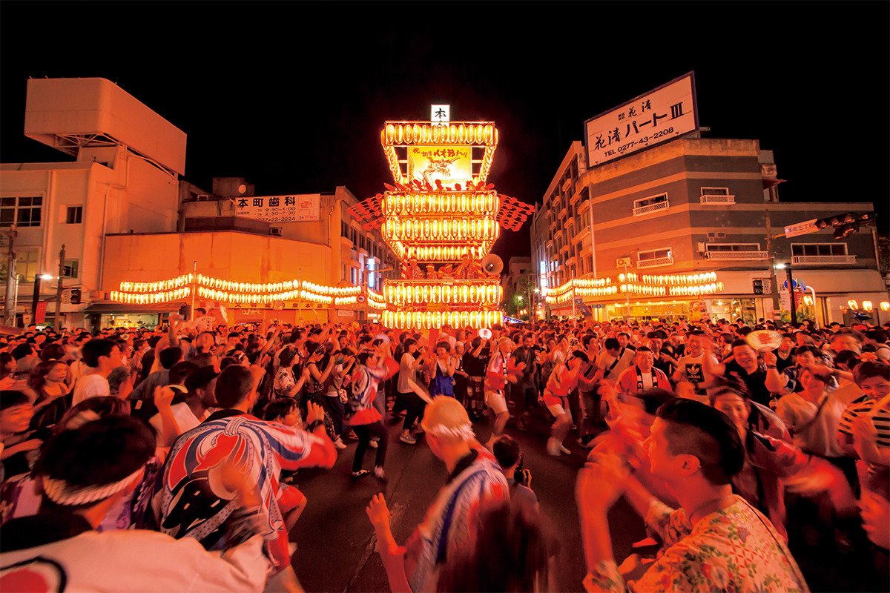
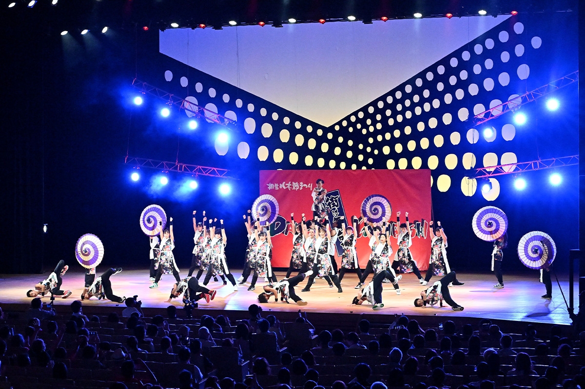
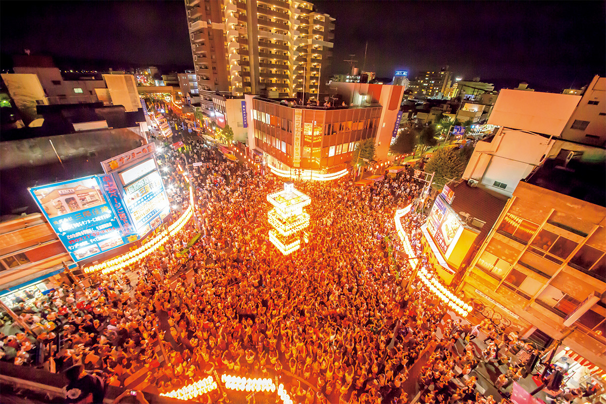

Префектура Гумма · Кирю · праздник
«Кирю Ягибуси мацури»: три августовских дня, когда весь город танцует вокруг башен

Каждый август старый город ткачей Кирю на три дня превращается в огромную танцевальную площадку. Песню ягибуси знает вся Япония, а здесь под неё можно танцевать самому.
Песня
Ягибуси и праздник Кирю
Ягибуси родилась в префектурах Гумма и Тотиги, и эту народную песню с бойким ритмом знают по всей стране. Праздник «Кирю Ягибуси мацури» стал местом, куда ради неё съезжаются любители танца со всей Японии.

История праздника началась в 1964 году. Тогда городской праздник Гион, ярмарку торговцев и ремесленников, фестиваль фейерверков и другие события объединили в первый «Кирю мацури». Позже ягибуси сделали главным героем, и праздник получил своё нынешнее название.
В дни праздника на улицах вокруг станции Кирю ставят несколько ягур, деревянных башен для музыкантов. С них ягибуси звучит вживую: играют музыканты, поёт певец. Встать в круг танцующих может любой желающий, опыта и записи не нужно.
Кульминация
Круг у главной башни
Сердце праздника находится в квартале Хонтё 5-тёмэ. Здесь стоит огромная ягура, увешанная множеством фонарей, и она стала символом всего праздника.

Толпа вокруг башни бурлит, как на рок-концерте. Люди кружат и танцуют почти до десяти вечера, и жар не спадает ни на минуту.
Гион
Праздник купеческого города
В те же дни в Кирю проходит праздник Гион, который ведёт историю с эпохи Эдо. По улицам движутся пышно украшенные повозки-ятай и огромные хоко, праздничные башни на колёсах высотой больше 9 метров. Кирю когда-то разбогател на торговле тканями, и праздник Гион до сих пор хранит память о тех временах и о культуре здешних горожан.
В 2025 году праздник прошёл 1–3 августа, а в 2026 году, в 63-й раз, 7–9 августа. Его проводят каждый год в начале августа; даты следующего праздника стоит смотреть на официальном сайте.
«Кирю Ягибуси мацури»
- Даты
- ежегодно в начале августа (1–3 августа в 2025 году)
- Адрес
- префектура Гумма, Кирю, улицы Хонтё-дори, Суэхиро-дори и Нисикитё-дори
- Как добраться
- от станции JR Кирю пешком; на машине около 20 минут от развязок Ота-Кирю и Ота-Ябудзука скоростной дороги Кита-Канто
- Цены / Вход
- бесплатно
- Сайт
- kiryu-maturi.net